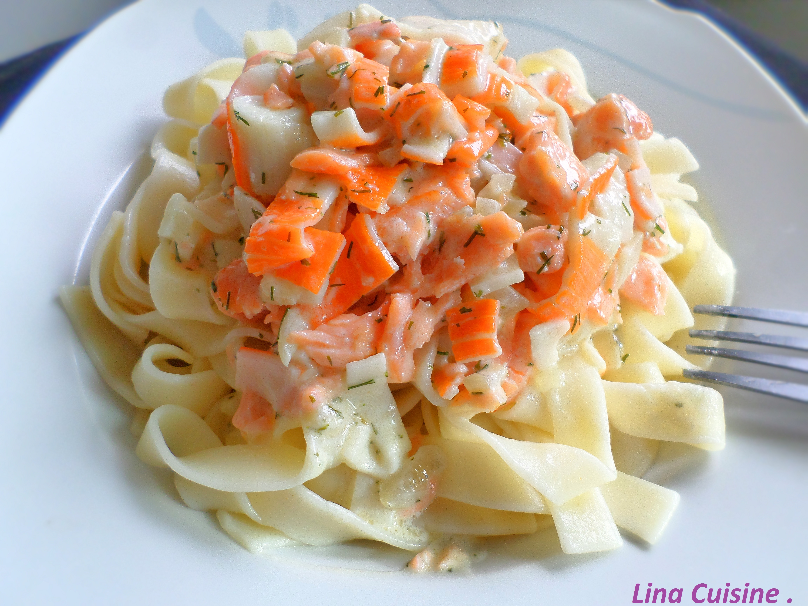

<ion-view view-title="Tagliatelles froides au saumon">

    <ion-content class="padding">


        <h1>Tagliatelles froides au saumon</h1>

        

        <p class="gras">Temps de préparation : 20 minutes</p>

        <p class="gras">Temps de cuisson : 17 minutes</p>

        <p class="gras">Ingrédients (pour 4 personnes) :</p>

        <ul>
            <li>- 15 g de Mayonnaise Amora</li>
            <li>- 500 g de tagliatelles</li>
            <li>- 4 pavés de saumon </li>
            <li>- 2 carottes</li>
            <li>- 1 courgette</li>
            <li>- Des brins de ciboulette</li>
            <li>- des brins d'aneth</li>
            <li>- 1/2 citron jaune</li>
            <li>- 2 courts-bouillons Knorr au poisson</li>
            <li>- Sel</li>
            <li>- Poivre</li>
        </ul>
        <br>

        <p class="gras">Préparation de la recette :</p>

        <p>Éplucher seulement les carottes et les tailler en "tagliatelles" avec un économe ainsi que la courgette.</p>

        <p>Cuire les pâtes dans de l'eau bouillante pendant 2 à 3 minutes, ajouter les carottes et la courgette pendant 1 minute.</p>

        <p>Dans une casserole remplie d'eau, porter à ébullition les 2 courts-bouillons au poisson Knorr. Retirer du feu et mettre les pavés de saumon, couvrir la casserole et laisser pocher 15 minutes.</p>

        <p>Une fois cuits, les émietter et réserver au frais.</p>

        <p>Ciseler la ciboulette et l'aneth puis les mélanger avec la mayonnaise Amora et le jus d'un demi-citron.</p>

        <p>Verser les tagliatelles dans un saladier, ajouter les miettes de saumon et la sauce et déguster.</p>

    </ion-content>

</ion-view>